Tiro는 어떤 서비스인가요
게스트는 두 사람이에요. Tiro를 만드는 더플레이토의 공동 창업자이자 CTO인 김상철 님은 사내에서 '여울'이라는 이름을 써요. B2B 세일즈와 사업 개발, AX를 맡은 박현제 님은 '레오'예요. 이 두 사내 이름은 뒤에서 에이전트 이름과 엮이니 기억해 두면 좋아요.
Tiro는 대화를 실시간으로 기록하는 서비스예요. 여기서 끝나지 않고 네 단계를 하나로 묶어요.
| 단계 | 하는 일 |
|---|---|
| 기록 | 대화를 실시간으로 받아 적어요 |
| 번역 | 필요하면 15개가 넘는 언어로 실시간 번역해요 |
| 문서화 | 조직이나 개인이 원하는 형식의 문서로 만들어요 |
| 공유 | Slack, MCP, CLI처럼 원하는 경로로 내보내요 |
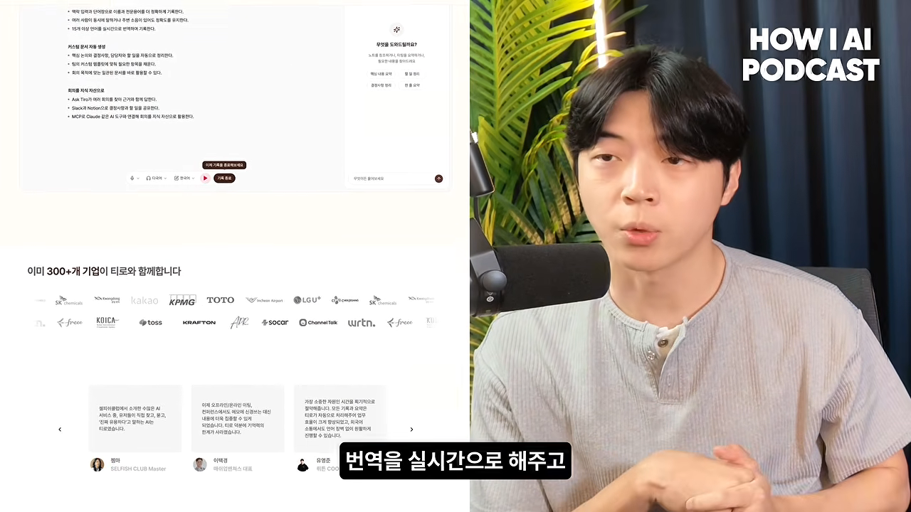
그래서 Tiro는 자기를 한 가지로 부르지 않아요. 회의록 자체가 필요한 회사에는 'AI 회의록 서비스', 회의록을 어떻게 쓸지가 중요한 회사에는 '대화를 자산으로 만드는 서비스'라고 소개해요.
초기 고객 1,000명에 집착한 이유
Tiro는 초반에 월 매출이 빠르게 올랐고, 그 비결로 제품이 자주 꼽혀요. 김상철 님은 좋은 제품이 퍼지는 과정을 종교가 퍼지는 과정에 비유해요.
모두를 만족시키는 제품 말고 정말 특정 고객들을 정말 집요하게 물고 늘어져서
— 영상 02:41
네트워크에는 늘 허브가 있어요. 그 허브 몇 사람을 열광하게 만들면 나머지는 그들이 퍼뜨려 줘요. 그래서 세 공동 창업자는 처음 1,000명 고객의 이름을 거의 다 외웠어요. 초기 고객 중 지인이 많아서, 기록이 잘 안 된다는 말을 들으면 강의실과 회의에 직접 들어갔어요.
논문 지표보다 현장
현장에 가 보면 모델의 논문 지표는 좋은데 고객은 만족하지 못하는 경우가 있었어요. 고객은 지표에 돈을 내지 않아요. 그래서 현장에서 교정 방식과 가중치를 계속 바꿔 가며 맞췄어요.
당시는 GPT-4가 막 나왔고, 스케일링 법칙이라는 말이 돌던 때였어요. 모델은 점점 똑똑해지고 값은 내려갈 테니, Tiro가 하는 기술 작업도 곧 특별하지 않게 될 거라고 봤어요. 그래서 차별점은 인터페이스에서 찾기로 했어요. 사용자를 옆에서 따라다니며 '방금 Tiro를 켤 수 있었는데 왜 안 켰어요?' 같은 질문을 계속했어요. 데이터로 셀 수 있는 것 너머의 하루 행동을 관찰한 거예요.
고객이었던 사람의 증언
박현제 님은 원래 Tiro의 100몇 번째 고객이었어요. 일본어 강의에서 인식이 틀린 부분을 알려 주자 공동 대표가 옆에서 한자와 음절을 하나하나 확인했어요. 하루 이틀 뒤 비슷한 강의를 들었을 때는 다 제대로 인식됐어요. 그 경험이 어떤 마케팅보다 강했다고 해요.
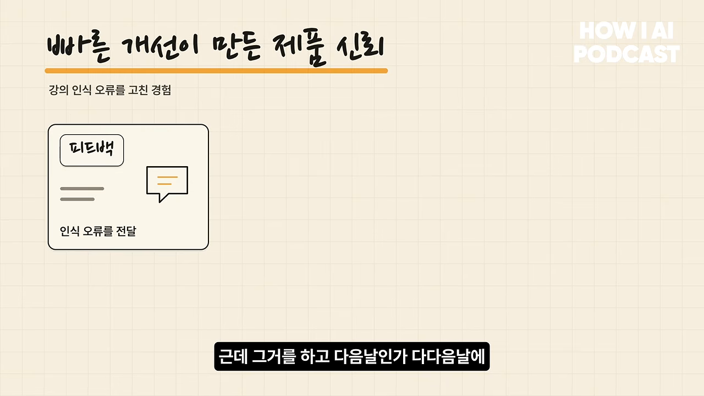
버틸 수 있었던 이유, 옵셔널리티
확신 없는 시기를 버틴 힘은 '옵셔널리티'예요. 할 수도, 안 할 수도 있는 선택지를 최대한 남겨 두는 거예요. 2024년 9월 첫 출시 때 셋 다 직장이 있었어요. 생계를 유지하면서 주말마다 16~18시간씩 모여 개발하고 고객을 만났어요. 고객이 많지 않아 비싼 API를 써도 비용이 감당할 만했어요. 김상철 님은 '다 그만두고 이것만 판다'였다면 같은 결과를 낼 자신이 없다고 솔직하게 말해요.
12명 팀, 12개의 복제 에이전트
Tiro는 영상 기준 작년 11월쯤 '프로젝트 Macrohard'를 시작했어요. 이름 그대로 Microsoft의 반대말이에요. Tiro도 소프트웨어를 만드는 회사이니, 고객을 직접 만나 목소리를 듣는 일 말고는 대부분 시뮬레이션할 수 있다는 생각이에요. 목표는 Tiro를 98% 정도 AI로 시뮬레이션할 수 있는 상태로 만드는 거예요.
멘션하면 에이전트가 먼저 답해요
지금 팀원은 12명쯤이고, 각자를 복제한 에이전트가 12개 있어요. 예를 들어 레오(박현제 님)를 Slack에서 멘션하면 레오의 에이전트 '미호'가 레오가 했을 답과 해야 할 일을 먼저 해요. 레오는 나중에 확인해서 맞으면 넘어가고, 틀리면 어디가 틀렸는지 스레드에 남겨요. 그 기록을 보고 빠진 규칙을 채워요.
고객과 직접 통화하거나 만나는 일을 빼면 거의 모든 업무가 이렇게 돌아가요. 개발, 장애 모니터링과 원인 분석 후 승인 요청, 새 고객 문의에 이전 메일 이력을 찾아 답장 초안을 쓰고 허가를 구하는 일까지요.
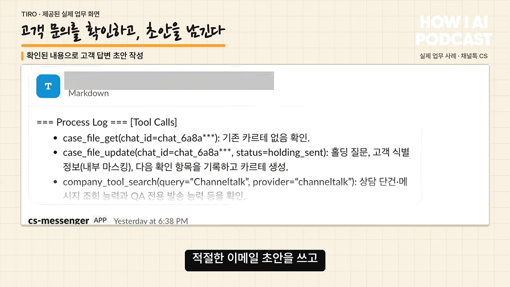
시작은 병목 문제였어요. 중요한 B2B 업무를 맡은 팀원이 시간대가 다른 곳으로 이주하면서, 그 사람 의견 없이는 진행이 어려운 일이 생겼거든요. 그런 일은 업무 규칙과 보는 데이터, 일반적인 지능만 있으면 할 수 있다고 봤어요. 고유한 경험을 가진 주체가 조직 규칙을 지키며 일하도록 잘 격리해서 맡기면, 사람과 거의 비슷하게 움직일 거라고 생각한 거예요.
에이전트를 이루는 세 층
에이전트 이름에는 장난이 섞여 있어요. 레오의 에이전트는 미호, 여울(김상철 님)의 에이전트는 겨울이에요. 미호의 성격은 이렇게 만들어요. 레오가 6개월~1년 동안 쓴 Slack 메시지를 여러 에이전트에 통과시켜 SOUL.md 하나를 뽑아요.
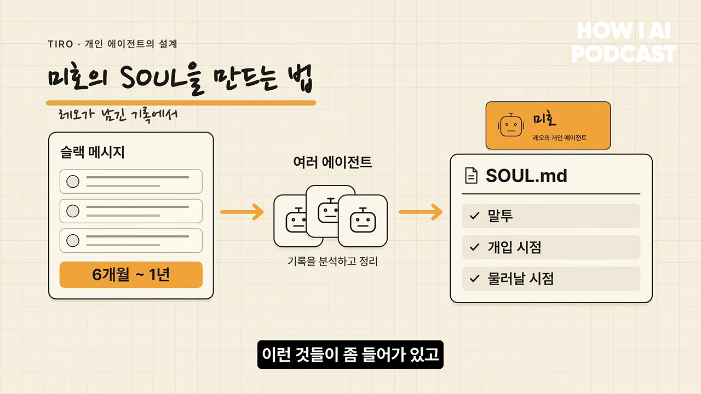
| 층 | 무엇이 들어가나요 | 누구 것인가요 |
|---|---|---|
| SOUL.md | 말투, 언제 끼어들고 언제 물러나는지 | 개인 |
| LLM 위키 | 그 사람이 평소 보는 데이터, Tiro로 기록한 대화를 CLI로 연결해 쌓은 지식 | 개인 |
| Tiro 온톨로지 | 고객 응대 규칙, B2B 세일즈 규칙처럼 모두가 지켜야 하는 규칙 | 회사 공용 |
세 층을 조합하면 사람마다 에이전트를 붙여도 꽤 효율적으로 돌아간다고 해요.
개인 에이전트는 실제로 무슨 일을 하나요?
레오의 미호: 일본 B2B 담당자
박현제 님이 Tiro에서 가장 많이 쌓은 업무 맥락은 일본 B2B예요. 일본어 메일, 작성한 계약서 같은 기록이 미호에게 넘어가 있어요. 외국어 메일은 톤이 특히 중요해요. 일반 AI로 쓴 메일은 다른 팀원이 믿지 못해서 늘 박현제 님께 다시 확인했어요.
이제는 그 규칙을 미호에게 정의해 뒀어요. 미호에게 물으면 고객에 맞는 답변과 경어 수준을 제안하고, 바로 보낼 수 있는 형태로 써 줘요. 일본은 결제나 계약 방식도 한국 기업과 달라서 그런 데이터도 쌓여 있어요. 지금은 다른 팀원이 일본 쪽을 맡고 박현제 님은 한국에 집중하는데, 인수인계 없이 미호에게 물어보면 해결돼요.
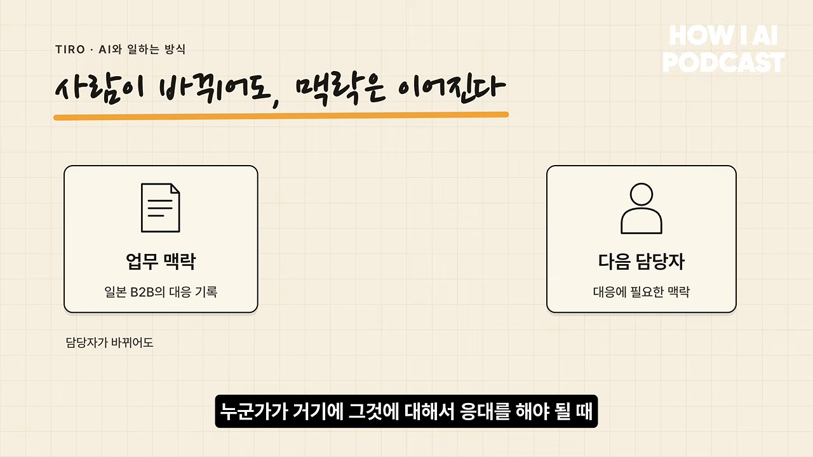
여울의 겨울: 하면 안 되는 일부터
김상철 님은 회사에서 권한이 많은 편이라 '무엇을 하면 안 되는가'를 정리하는 데 먼저 시간을 썼어요. 쿼리 실행, 상태 변경, 환불처럼 실제로 무언가를 바꾸는 요청은 요청자의 Slack ID부터 보고 걸러요.
겨울은 두 가지 역할을 해요.
| 역할 | 하는 일 |
|---|---|
| 개인 비서 | 새벽 5~6시에 리포트 2~3개를 보내요. 밤사이 회사 일, 오늘 일정과 관련된 사람, 지난 미팅 노트를 보고 무엇을 준비할지 알려 줘요 |
| 정기 업무 | 보안 인증 두 개를 받으며 생긴 권한 점검, 감사 보고서 같은 일의 주기와 절차가 온톨로지에 있어요. 크론으로 돌며 '이제 정책 점검할 때야'라고 알려 줘요 |
| 보안성 검토 | 대기업이 보내는 160~200개 항목의 검토표를 온톨로지에 맞춰 조합하고, 필요하면 번역해 초안을 써요 |
| 법률 검토 | 초안을 먼저 만들어 두면 변호사 자문 시간이 줄어요. 100% 믿지 않으니 김상철 님이 이해한 뒤 가져가요 |
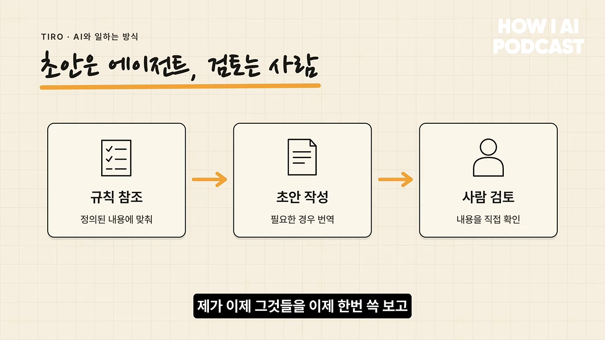
도구는 달라도 규칙은 한곳에
Slack 봇과 터미널의 Claude Code, Codex를 섞어 써요. 다만 Tiro 온톨로지 레포는 딱 하나예요. 누가 어떤 도구로 일하든 규칙을 따르거나 바꿀 때는 반드시 그 레포를 거쳐요. 반면 LLM 위키는 에이전트마다, 세션마다 다르게 구성돼 있어요.
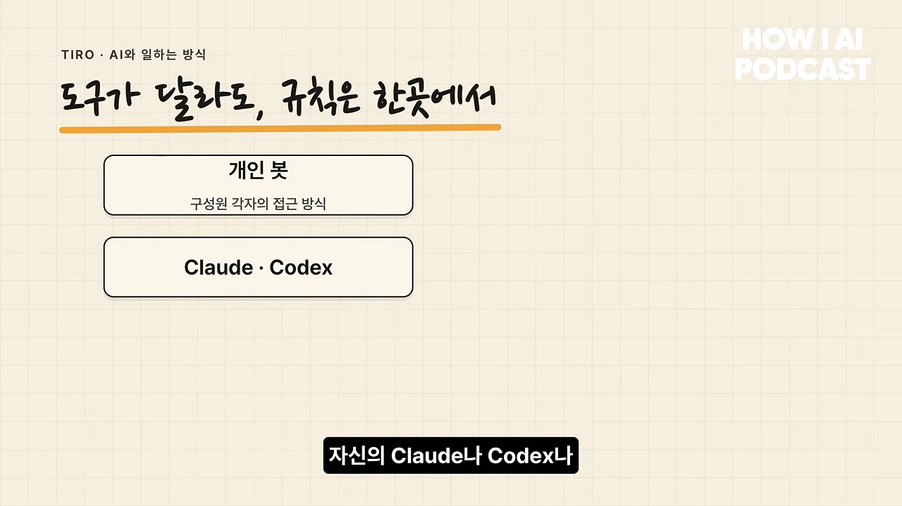
온톨로지는 언제 필요할까요?
김상철 님은 Tiro 온톨로지가 엄격한 의미의 온톨로지는 아니라고 먼저 말해요. 그가 말하는 온톨로지는 Palantir의 정의를 따르는데, 다섯 요소로 이뤄져요.
| 요소 | 창고 예시로 보면 |
|---|---|
| 데이터 | 무엇을 기록할지예요. 창고를 칠하는 회사는 색깔이, 물류 회사는 크기와 넣을 수 있는 물건이 중요해요 |
| 로직 | '비었다'를 어떻게 정의할지예요. 천 개가 들어가는 창고에 한두 개만 있으면 빈 걸까요? |
| 액션 | 비었을 때 무엇을 할지예요. 비면 채워요 |
| 권한 | 아무나 창고를 채우거나 물건을 빼면 안 돼요 |
| 감사 | 1년 뒤에도 누가 창고에 접근했는지 추적돼야 해요 |
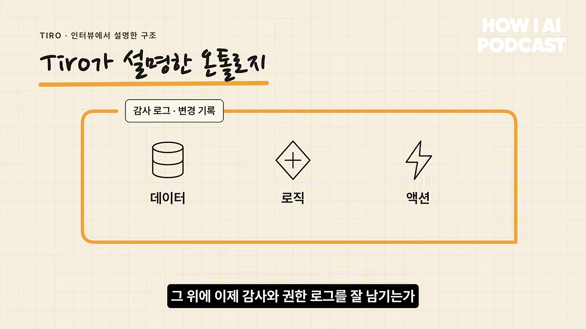
진행자가 엔티티와 관계로 생각했다고 하자, 김상철 님은 이렇게 정의한다고 답해요. 창고 예시를 하다 보면 '비면 채워라'라는 지시가 얼마나 거친지 알게 된다는 말도 덧붙여요.
무엇을 온톨로지에 넣을까요
기준은 두 가지예요. 절대 틀리면 안 되는가, 그리고 조직 안에서 사람마다 다르게 말하면 문제가 되는가예요. '이메일 써 줘'는 온톨로지로 넣기 어렵고, 적당한 할루시네이션이 오히려 도움이 될 수도 있어요. 반면 발주를 넣거나 계약서에 금액을 쓰는 일은 바뀌면 안 돼요.
Tiro의 출발점은 MRR이었어요. 팀원마다 '한국 기업 MRR'을 다르게 말하고 있었거든요.
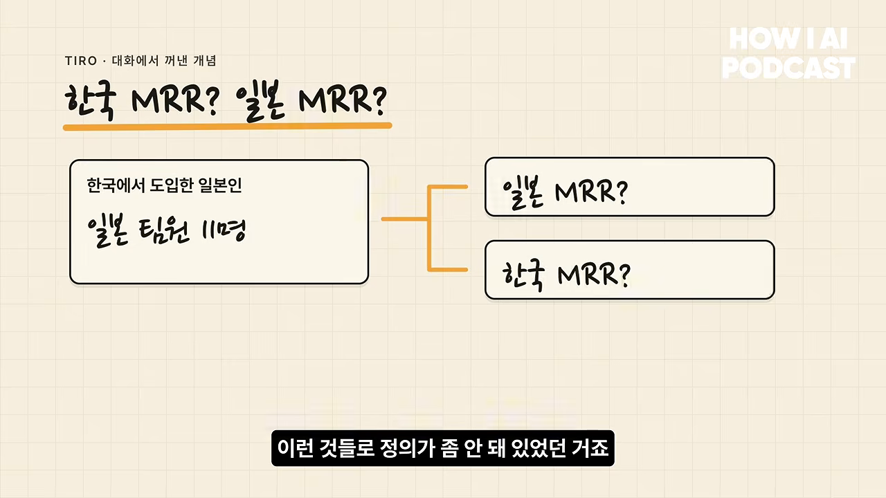
말이 정의되면, 그걸 어기면 안 되는 규칙으로 만들 가치가 있는지 따져요. 있으면 온톨로지로 올리고, 없으면 프롬프트에만 둬요. 다섯 요소가 다 필요할 만큼 중요한 말이 아니라면 LLM 위키와 똑똑한 모델로 충분하다는 입장이에요.
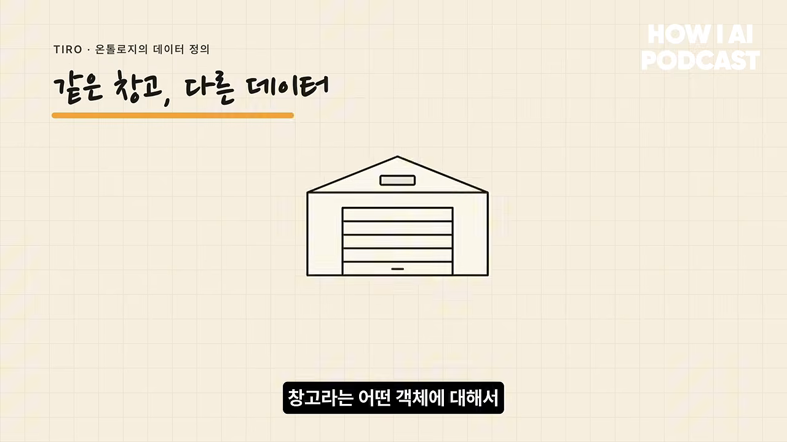
왜 다들 온톨로지를 말할까요
박현제 님은 온톨로지가 마케팅 용어처럼 쓰이는 면이 있다고 봐요. AX에 대한 불안이 커지면서, 사람들이 정해진 공식과 정답이 있다고 믿고 프레임워크 하나를 도입하는 데 집착한다는 거예요. 그에게 AX의 핵심은 회사가 풀 문제를 명확히 정의하고 그걸 AI로 어떻게 풀지 정하는 거예요. 진행자는 회사마다 맥락이 다르니, 그 맥락에 맞춘 합의를 끌어내는 수단으로 온톨로지가 주목받는다고 해석해요.
온톨로지는 어떻게 만드나요?
회의록 서비스가 어떻게 조직의 규칙을 잡아낼까요? 김상철 님은 온톨로지의 가치가 결국 '언어를 정하는 일'에서 나온다고 말해요.
온톨로지를 올바르게 규칙을 그 정의를 하려면은 암묵지에서 그냥 알아서 잘 하던 일들을 언어로 표현을 해야 되거든요.
— 영상 23:43
그냥 받아서 처리하던 일을 '어떤 규칙으로 처리했어야 했나, 이런 경우엔 어떻게 했어야 했나'로 바꿔 말해야 해요. 이 과정에서 조직의 AI 활용 능력이 커진다고 믿어요.
업무 규칙을 적는 데서 시작해요
방법은 기술적으로 어렵지 않아요. 각자 하는 일을 다른 사람이 그대로 따라 할 수 있을 만큼 자세히 업무 규칙으로 적어서 올려요. 처음부터 엄격한 객체 형태일 필요는 없어요. 모아 놓고 보면 공통 개념이 보이고, 같은 말을 다르게 쓰는 곳도 드러나요.
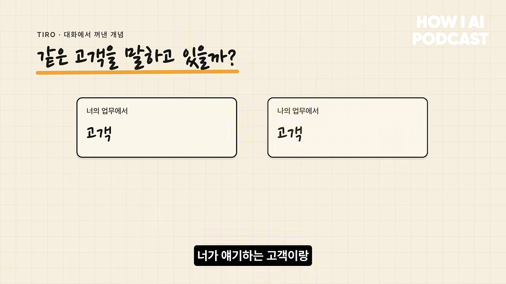
기술적으로 고민할 건 감사를 어떻게 남길지, 누가 접근할 수 있게 할지 정도예요. 더 중요한 질문은 이거예요. '똑똑하지만 이 분야를 전혀 모르는 팀원에게 문서 하나 주고 한 달 휴가를 떠난다면, 마음 편하려면 무엇이 적혀 있어야 할까?'
프리 온톨로지는 온톨로지가 아니에요
Tiro가 쓰는 '프리 온톨로지'라는 말에 대해 김상철 님은 먼저 선을 그어요. 온톨로지는 자동으로 만들어지지 않고, 결정권자가 '앞으로 이렇게 말하자'고 찍어 줘야 해요. 프리 온톨로지는 대화 기록 서비스의 가치를 설명할 말이 없어서 만든 표현이고, 마케팅 의도가 있었다고 인정해요.
논리는 이래요. Claude Code나 Codex 같은 코딩 에이전트가 먼저 두각을 보인 건 맥락과 하네스가 풍부해서예요. 예시 코드, 코드베이스 전체, 팀 규칙이 들어가고, 'CI가 돌면 성공' 같은 기준도 정하기 쉬워요. 비즈니스에도 이런 재료가 필요한데, 대화 기록이 그 원천이 될 수 있다는 거예요.
다만 전체 녹취나 요약본을 그대로 넣는 건 답이 아니에요. 최소한의 관계가 필요해요. 예를 들어 김상철이라는 사람과 빌더 조쉬라는 조직이 언제, 어떤 관계로 대화를 시작했고, 그 출처가 어디인지만 있어도 충분할 수 있어요.
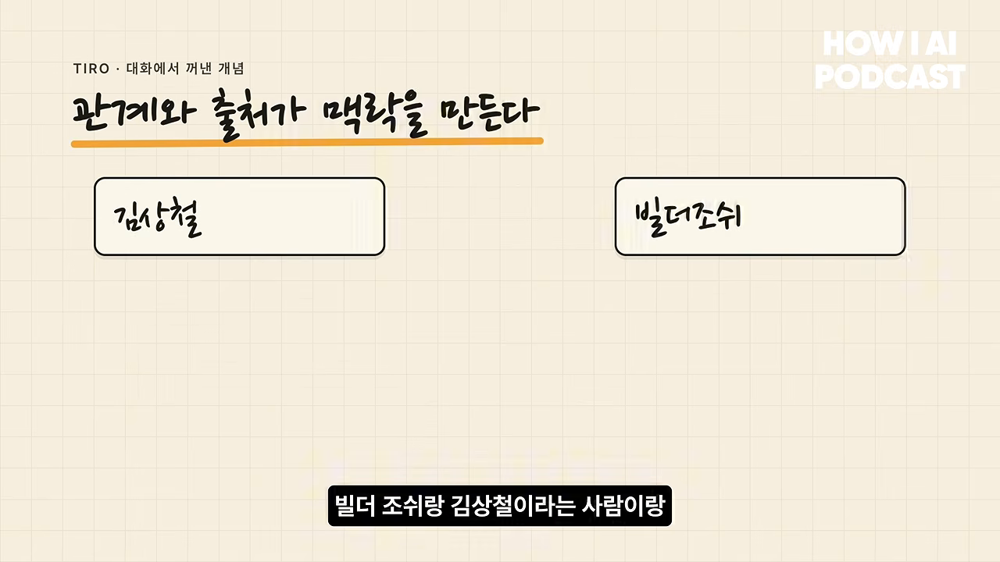
Tiro도 내부적으로 이렇게 써요. '우리는 장애를 어떻게 정의하지?'라는 질문에 Tiro 노트에서 장애 관련 대화를 뽑아 보니, 서버 장애뿐 아니라 고객 CS로 들어온 문제도 장애라고 부르고 있었어요. 그걸 포함해 온톨로지를 정의했어요. 온톨로지를 정하기 직전 단계를 돕는다는 게 프리 온톨로지의 뜻이에요.
실제 온톨로지는 YAML 레포 하나예요
화면 공유에서 보여 준 Tiro 온톨로지는 레포 하나예요. 엔지니어링, 그로스 같은 도메인별로 나뉘고, YAML 스키마로 적혀 있어요. 예를 들어 B2B MRR 항목에는 설명과 어떤 쿼리로 값을 가져오는지가 들어 있어요. 엄격한 규칙보다 팀원이 자기 업무 규칙을 에이전트와 동료가 이해하기 쉽게 나누는 데 초점을 두고 있어서, Palantir 방식 그대로는 아니라고 해요.
규칙은 계속 바뀌어요. 에이전트가 직접 고치기도 하고, 사람이 '이 규칙은 추가해야겠다, 이건 폐기해야겠다' 하면 PR이 올라와요. PR이 생각보다 많아서, 김상철 님은 매주 한 번 전체 린트를 돌려요. CTO로서 회사에서 일어나는 오작동을 다 이해하고 있어야 하기 때문이에요. 작은 팀이라 가능한 구조라는 점도 인정하고, 앞으로 Palantir 온톨로지에 더 가까운 방식으로 옮겨 가려고 해요.
에이전트를 믿으려면
김상철 님이 겨울의 실제 답변을 보여 줘요. 팀원 아린 님이 엔터프라이즈 계약서 페이지 수정을 부탁하자, 겨울이 보안 검토 내용을 가져와 답한 스레드예요. 보여 주고 싶었던 건 툴 콜링 부분이에요.
에이전트의 일반 지능은 대부분의 분야에서 자기보다 뛰어날 거라고 김상철 님은 봐요. 그래서 결과보다 과정을 믿을 수 있게 만들어요. 어떤 도구와 위키, 스킬을 쓰고 어떤 온톨로지를 보고 결론을 냈는지, 에이전트가 항상 로그를 남겨요.
샌드박스 안에서만 움직인다는 믿음
자율적으로 움직이는 에이전트를 믿으려면 정해진 샌드박스 안에서만 동작한다는 확신이 있어야 해요. 한두 번 잘했다고 100만 번 단위로 늘리면, 사고가 날 확률은 통계적으로 1에 가까워지거든요.
평가는 어떻게 하나요
두 가지가 있어요. 첫째, 평가하는 사람 자체를 '슈퍼휴먼'으로 만든다는 철학이에요. 둘째, 그래서 Slack 인터페이스를 고집해요. 로그를 어딘가에 쌓아 두고 일주일에 한 번 어드민에서 확인하라고 하면 아무도 안 봐요. 대화 흐름 안에 바로 보이면, 누가 봐도 이상한 답은 쓱 보고 고칠 수 있어요. 김상철 님도 100% 다 보지는 않지만, 계약처럼 꼭 확인해야 하는 대화는 반드시 보고 다듬어요.
느린 구간이 전체 속도를 정해요
에이전트를 더 많이 쓰면 조직 성장은 어디서 막힐까요? 김상철 님은 조화 평균으로 설명해요.
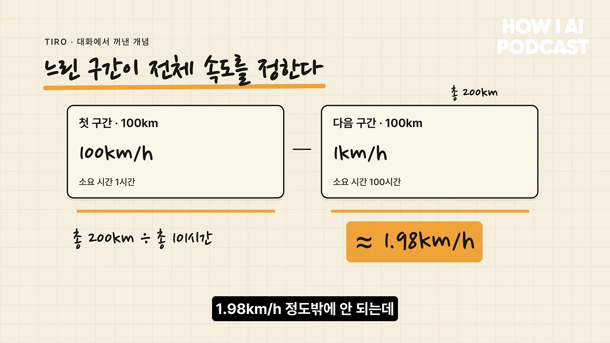
앞 주자를 빛의 속도로 만들어도 첫 구간 시간이 0이 될 뿐이라, 평균은 200km ÷ 100시간 = 2km/h를 넘지 못해요. 반대로 뒤 주자를 10km/h, 50km/h로 올리면 전체 속도가 크게 늘어요. 그리고 Tiro에서 그 1km/h 주자는 사람이에요.
그래서 에이전트를 튜닝하고 하네스를 다듬는 것도 중요하지만, 팀원의 일반 지능과 사고력, 문제를 정의하는 능력에 훨씬 많이 투자해요. 성과 평가에서도 중요한 기준이에요. 루프를 돌다 실패하는 건 괜찮지만, 그 루프에서 배운 게 없으면 실망스럽다는 식이에요.
개인 에이전트 문화와 보안 인증
기능별이 아니라 사람별 에이전트
내부 AX에서 가장 중요한 결정은 에이전트를 개인 단위로 만든 거예요. CS 에이전트, B2B 에이전트처럼 기능별로 만들 수도 있었어요. 하지만 그러면 오너십이 불분명해지고, 권한 관리가 애매해지고, 그걸 관리할 직무가 새로 생겨요.
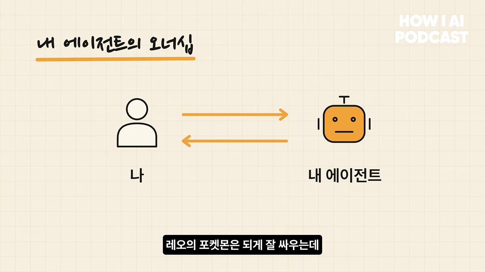
사람별 에이전트는 '내 포켓몬'이에요. '레오 포켓몬은 잘 싸우는데 내 건 왜 이래?' 하면서 더 열심히 키우게 되고, 인센티브도 맞아요. 편차는 자연스럽게 체감돼요. 누군가를 불렀는데 그 사람의 에이전트가 잘하면, 본인은 끝까지 나타나지 않고 대화가 끝나거든요.
격주 공유와 공통 패치
격주로 모여 '내가 이 회사에서 내 역할을 20%씩 어떻게 빼고 있나'를 공유해요. 이야기하다 보면 좋은 공통 패턴이 나오고, 김상철 님이 주말에 모든 에이전트에 한꺼번에 반영해요. 최근엔 에이전트마다 위키를 만들어 주고 Tiro API 키를 줘서, 각자 나눈 대화를 에이전트가 매일 알게 했어요.
중앙 온톨로지에는 다른 팀원도 PR을 올려요. 김상철 님은 매주 규칙이 어긋난 곳이 없는지 린트를 돌리고, 최근에는 온톨로지 전용 린트를 만들어 CI에서도 확인해요. 온톨로지는 회사 공용 규칙이라 엄격하게 보지만, 개인 에이전트는 고장 나면 본인 손해라 서로 격리해 뒀어요. 미호가 고장 나도 겨울은 멀쩡하고, 고장은 각자 고쳐요. 어려우면 김상철 님께 도움을 청해요.
보안 인증을 일찍 받은 이유
이유는 둘이에요. 이 제품은 민감한 정보를 다룰 수밖에 없어요. 그리고 B2C 고객은 '좋다, 쓰자'로 움직이지만, B2B 고객은 '안 쓸 이유가 없으면 쓴다'에 가까워요. 제품이 아무리 좋아도 보안성 검토를 통과하지 못하면 끝이에요. 안정적인 매출을 다지고 큰 기회를 잡으려면 B2B가 필요했으니, 보안에 일찍 투자하기로 했어요. 1년을 달리느라 지쳐 있던 김상철 님에게는 체크리스트만 채우면 되는 보안 작업이 일종의 쉼이었다는 농담도 나와요.
박현제 님이 영업 현장에서 느낀 가장 큰 변화는 인증이에요. 전에는 보안 이야기를 하면 '이것도 잘하고 저것도 잘한다'를 계속 주고받았어요. SOC 2와 ISO 인증을 받은 뒤로는 그 말만으로 어느 정도 깔고 들어가는 느낌이 생겼다고 해요. 고객이 보내는 큰 보안 검토 엑셀은 겨울에게 먼저 넘기고, 여울(김상철 님)이 한 번 더 검수해요.
대화를 자산으로, 그리고 다음 단계
저장과 꺼내 쓰기
박현제 님은 Tiro를 '대화를 자산으로 만드는 제품'이라고 소개하면서, 자산의 조건을 두 가지로 나눠요. 안전하게 저장(store)할 수 있어야 하고, 가치를 만들 때 꺼내 쓸(retrieval) 수 있어야 해요.
| 고객 | 원하는 것 | Tiro의 제안 |
|---|---|---|
| 저장이 중요한 고객 | 사내 대화를 안전하게 남기기 | Confluence든 Google Drive든 원하는 형태(보고서, 표)로 꽂아 드려요 |
| 꺼내 쓰기가 중요한 고객 | 모은 대화로 에이전트와 지식 베이스 만들기 | CLI, MCP, API로 정확하게, 토큰은 적게 꺼내 가게 해요 |
아직은 저장만 잘 돼도 돈을 내는 고객이 꽤 많아요. 시장이 얼리 어답터에서 얼리 머저리티로 넘어가는 중이라고 봐요. AX에 관심 있는 고객에게 'Tiro 플랫폼 안에서 다 하세요'라고 하는 건 너무 강압적이라고 생각했어요. 그래서 'Tiro에서 꺼내 가세요, 안전한 지갑이에요'라고 말해요.
Tiro 위키는 맥락의 색인이에요
에이전트가 꺼내고 싶은 건 전체 녹취가 아니에요. '김 부장이 어떤 프로젝트를 맡고, 누가 엮여 있고, 어떤 기업이 관련돼 있나'가 중요해요. 노트 원문을 다 가져오면 토큰도 많이 쓰고 할루시네이션도 생겨요. 김 부장 위키 한 장을 가져오면 연결된 개념이 함께 따라와요.
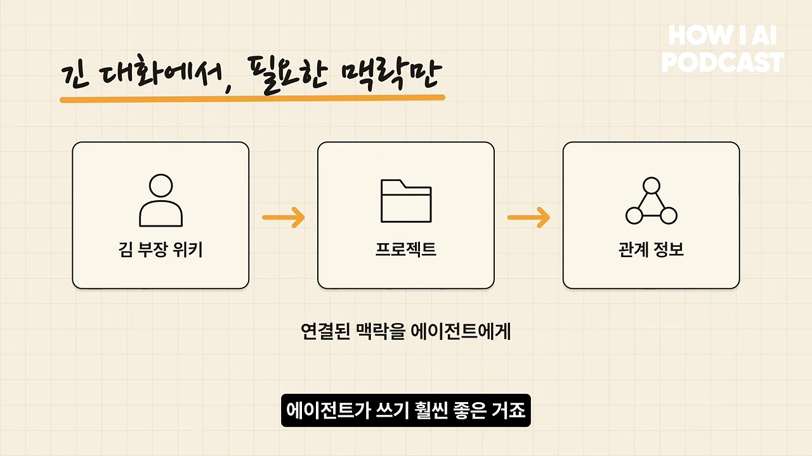
진행자가 품질은 어떻게 입증하느냐고 묻자 김상철 님은 도서관을 예로 들어요. 알렉산드리아 도서관에서 색인 없이 특정 책의 63페이지를 찾으라고 하면, 시간과 지능이 충분하면 찾긴 해요. 하지만 색인이 있으면 훨씬 빠르고 정확해요. 위키가 LLM 시대의 좋은 색인이라는 거예요. 정확도가 높다는 건 비슷해서 헷갈리지만 정답이 아닌 내용이 덜 섞인다는 뜻이라고 설명해요.
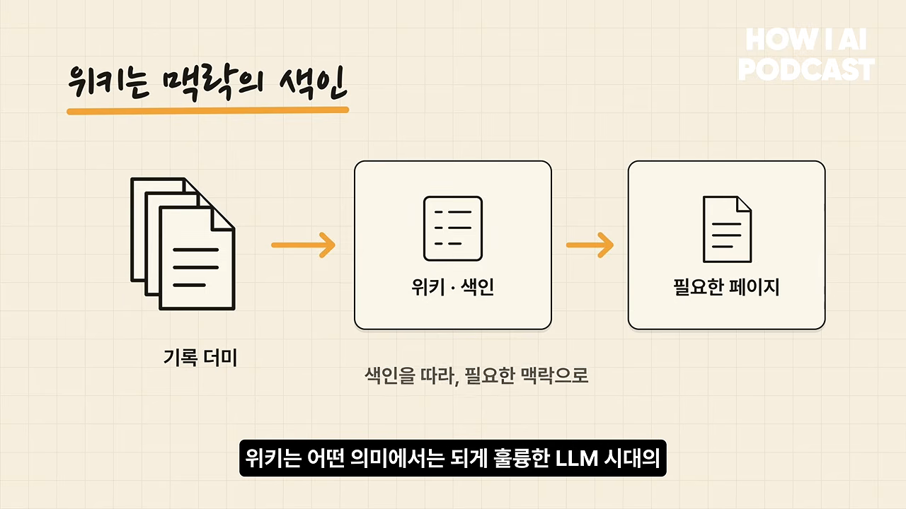
두 사람의 관심사
김상철 님은 인공위성을 띄우고 싶어 해요. 이유 하나는 낭만이에요. 나중에 아이에게 '방금 아빠 위성 지나갔어'라고 말하고 싶대요. 다른 하나는 Palantir에 투자하며 알게 된 위성 기업의 비전이에요. 소버린 위성, 그리고 '검색 가능한 지구'를 만든다는 거예요. 지금은 옥상에 72cm쯤 되는 안테나와 동글을 달아 이미 떠 있는 위성 신호부터 받아 보는 중이에요.
박현제 님은 AI 시대에 자기 가치를 어디서 찾을지 고민해요.
제가 이제 이전 회사에서 제가 했던 모든 일들은 다 AI가 하고 있고 저는 그 명령만 내리고 있는 그런 상황이 된 거죠.
— 영상 44:06
지금까지는 단위 시간에 얼마나 많은 일을 하는지, 생산성으로 자기 가치를 증명했어요. 그 일을 AI가 하게 되면 사람은 다른 기준으로 평가받을 거라고 봐요. 그래서 자기가 내세울 목표를 찾는 중이라고 해요.
Tiro가 보는 다음 단계
김상철 님은 아직 이사진과 합의한 내용은 아니라며 개인 생각을 말해요. 지금까지는 '사용자'를 늘 사람으로 생각했지만, 곧 에이전트가 주요 사용자가 되는 세계가 온다고 봐요. 사람도 법인도 아닌 주체가 돈을 벌고 소비하게 될 텐데, 에이전트는 녹음을 하지 않아요. 그들이 Tiro를 쓴다면 Tiro가 잘 묶어 둔 대화 자산을 쓸 거예요. 그래서 그 인터페이스를 깔끔하고 날카롭게 제공하는 데 집중하고 있어요.
박현제 님은 앞으로 1~2년을 봐요. 마블 영화처럼 페이즈 1이 끝났으니 페이즈 2로 가야 하는데, 페이즈 2는 회의록을 사람이 아니라 에이전트가 읽는 단계예요. 그래서 내세우는 문구가 'now your agent works'예요. 의사 결정의 90%는 대화에서 일어나니, 그 대화를 이해한 에이전트라면 뻔한 답을 넘어설 수 있다는 뜻이에요. Tiro를 단순한 AI 회의록이 아니라, 기업에서 휘발되던 맥락을 보존하고 이해시키는 도구로 빠르게 자리 잡게 하려는 거예요.